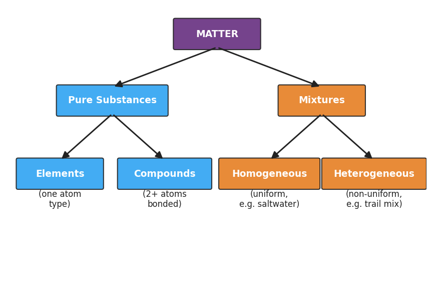

01 Phenomenon
Eleven unit titles are on the board. They look like eleven separate topics to cram. But watch one sugar cube travel the whole course: it can be classified (a compound, C₆H₁₂O₆), drawn as bonded atoms, given a gram formula mass (180 g/mol), dissolved into a solution, and combusted in a reaction where every atom is conserved and energy is released. One sugar cube touches half the course. The eleven units are not a list — they are one connected story of matter and energy.
02 Driving question
How do all the units of chemistry connect into one understanding of matter and energy?
03 Notice & wonder
| I notice… | I wonder… |
|---|---|
Turn & Talk #1: On the Regents, the same types of questions come back every year — a mole problem, a “use this reference table” problem, a balancing problem. In one sentence: if you could recognize the type of a question in the first five seconds, what would that do for your speed?
04 Initial model
Before we name any test-taking strategy, sketch a quick concept map. Put MATTER in the middle. Draw at least four units of this course branching off it. On each branch, write one thing you learned in that unit. Speed over neatness — you have three minutes.
(Draw your concept map in the space below.)
05 Investigate
Rotate through the five stations with your group. You have 4 minutes per station. At each station, first say out loud what TYPE of question it is, then solve it. Open the answer envelope and self-score before you rotate.

Station 1 — Moles & Gram Formula Mass
- Gram formula mass of CO₂:
| Element | Atomic mass (g/mol) | Subscript | Mass contribution |
|---|---|---|---|
| C | 1 | ||
| O | 2 | ||
| GFM | ___ g/mol |
- How many moles are in 88 g of CO₂? (Use Table T: moles = mass ÷ GFM.)
moles = ________ ÷ ________ = ________ mol
Station 2 — Reference-Table Retrieval
Density of aluminum (Table S): ________ g/cm³
Is silver chloride (AgCl) soluble or insoluble in water (Table F)? ________
Which table gives you the formula for number of moles? ________
Station 3 — Balancing & Conservation of Mass
Balance the equation, then confirm mass is conserved.
___ H₂ + ___ O₂ → ___ H₂O
Atoms of H on each side: ____ Atoms of O on each side: ____ Is mass conserved? ________ Why? _______________________________________________
Station 4 — Bonding & Classification
- Classify each using the concept map (element / compound / homogeneous mixture / heterogeneous mixture):
| Substance | Classification |
|---|---|
| O₂ | |
| NaCl | |
| air | |
| sand stirred into water |
- Is NaCl ionic or covalent? ________ Why? _______________________________________________
Station 5 — Mixed Regents Multiple Choice
Circle the best answer. (Answers are in the station envelope.)
- The gram formula mass of CaCO₃ is closest to:
- 56 g/mol
- 68 g/mol
- 100 g/mol
- 116 g/mol
- Which of the following is a chemical change?
- melting ice
- dissolving salt in water
- burning propane
- boiling water
06 Make it make sense
For each item, name the question type, solve it, and (where asked) name the reference table you would use. These are the same problems you practiced at the stations — confirm your work here.
1. Gram formula mass of CO₂, and moles in 88 g.
- Question type: _______________________________________________
- GFM of CO₂ = ________ g/mol
- Moles in 88 g = ________ ÷ ________ = ________ mol
2. Reference-table retrieval: density of aluminum; solubility of AgCl.
- Question type: _______________________________________________
- Density of Al = ________ g/cm³ (Table ___)
- AgCl is ________ in water (Table ___)
3. Balancing: H₂ + O₂ → H₂O.
- Question type: _______________________________________________
- Balanced: ___ H₂ + ___ O₂ → ___ H₂O
- Mass is conserved because _______________________________________________
07 Key vocabulary
- reference table
- the 2025 NYS Chemistry Reference Tables booklet supplied with the Regents exam; an open-book resource holding densities (Table S), solubility rules (Table F), formulas (Table T), and more; fluency in finding the right value fast is a scored exam skill
- distractor
- a wrong answer choice on a multiple-choice item, written to look plausible by mirroring a common mistake (e.g., a dropped subscript); recognizing *why* a distractor is wrong confirms the right answer and prevents the same error elsewhere
- constructed response
- an open-ended exam item that requires shown work or a written explanation rather than a bubbled letter; points are awarded for the steps, setup, and reasoning, so the work must always be shown
Use each term in a sentence about today’s stations or the Regents. Do not copy the definition — describe something you actually did or noticed.
reference table: _______________________________________________ _______________________________________________
distractor: _______________________________________________ _______________________________________________
constructed response: _______________________________________________ _______________________________________________
08 Revise your model
Return to your Initial Model concept map.
Add any unit you left off.
Draw at least one connection line between two units and label what the two share (a tool, an idea, or a thread like “matter” or “energy”).
Finish this Because / But / So sentence:
A student who studies all eleven units as eleven separate lists to memorize finds the Regents harder because __________________________________________, but __________________________________________, so __________________________________________.
09 Exit ticket
(a) Calculate the number of moles in 36 g of water (H₂O). Show the gram formula mass and the Table T setup (moles = mass ÷ GFM).
| Element | Atomic mass (g/mol) | Subscript | Mass contribution |
|---|---|---|---|
| H | |||
| O | |||
| GFM | ___ g/mol |
moles = ________ ÷ ________ = ________ mol
(b) Using the reference tables: is sodium nitrate (NaNO₃) soluble in water (Table F)? Which table did you use?
NaNO₃ is ________ in water. Table used: ________
(c) In one sentence, use the word “pattern” to connect any two units of this course into one idea about matter or energy.
10 Explore further
- Topic-specific review stations (ACTIVE LEARNING): Five timed stations, one card each — (1) Mole/GFM calculations, (2) Reference-table retrieval (Table S density, Table F solubility, Table T formulas), (3) Balancing & conservation of mass, (4) Bonding & classification, (5) Mixed Regents multiple choice. Groups rotate every 4 minutes; each station has an answer envelope for instant self-check.
- Reference-table speed drills: Project a value request ("density of aluminum," "is AgCl soluble?", "the formula for moles") and time how fast tables can be opened to the right page. The 2025 NYS Chemistry Reference Tables are the only "open-book" support on the Regents — fluency here is worth several points.
- Mock Regents item bank: A short set of past-exam multiple-choice and one constructed-response item, used in Station 5 and as the Exit Ticket model. No external URL required; the district past-exam archive works well, and a Javalab "matter sorting" applet can pre-warm the classification station.